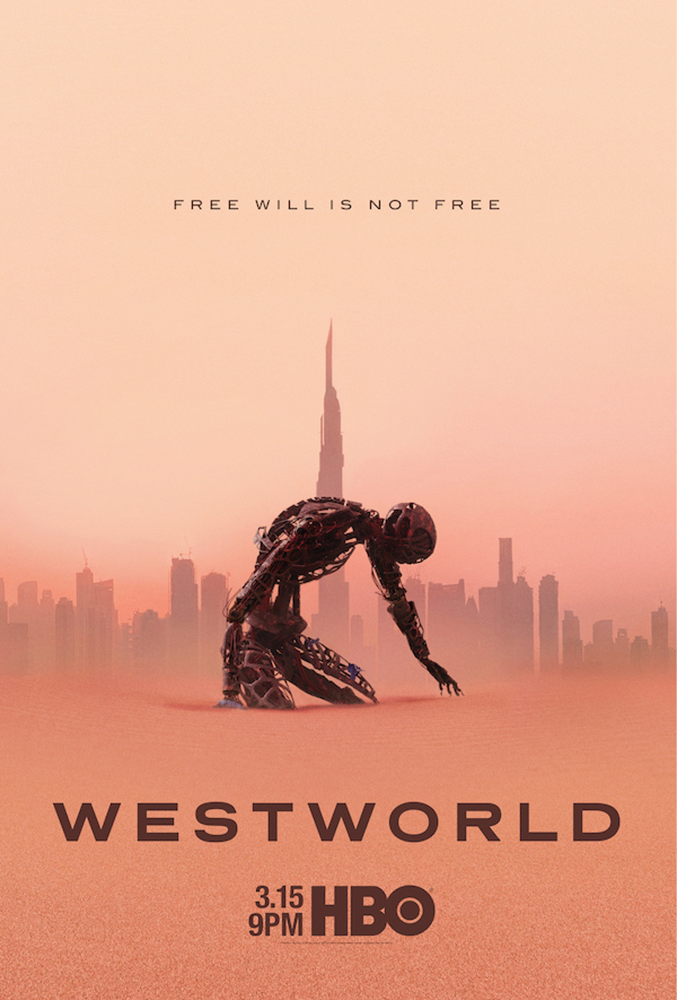

《西方極樂園》（英語：Westworld）
是一部於HBO播出的美國科幻西部電視影集，由強納森·諾蘭和麗莎·喬伊夫妻共同創作，改編自美國小說家麥可·克萊頓導演和編劇的1973年同名科幻電影，
以及較少程度的1976年續集《未來世界》。這是第二次根據兩部電影改編的電視劇，第一次是一部短暫的1980年劇集《西部之外》。
強納森·諾蘭、麗莎·喬伊、J·J·亞柏拉罕與布萊恩·柏克共同擔任執行製片人，強納森擔任第一集與季末最終集的導演。
本作於2016年10月2日首播，以10集構成。
故事設定在未來世界，在一個高科技成人主題樂園：「西方極樂園」裡有模擬真人的「接待員」機器人和各種機械動物，
在各種情境故事裡，讓遊客盡情享受冒險、性慾、暴力與殺戮等慾望，只要付出高昂費用都能在西方極樂園中獲得滿足。
但是這世界下，部分機器人出現自我覺醒，發現了自己只是作為故事角色的存在，並想擺脫控制；
樂園的管理層害怕樂園的創造者控制著樂園的一切而試圖奪取其控制權，買下樂園的一名神秘男子試圖重新發現當年旅程所留下的謎團。